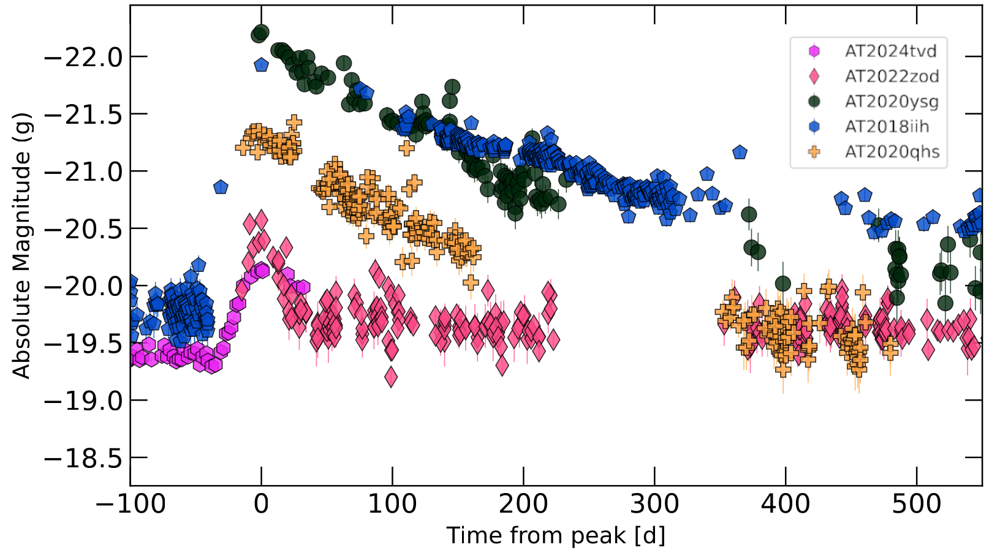
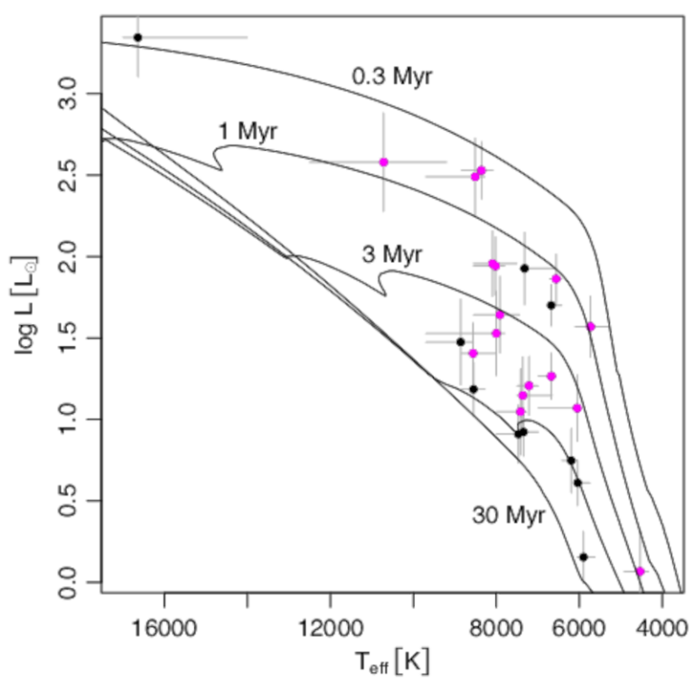
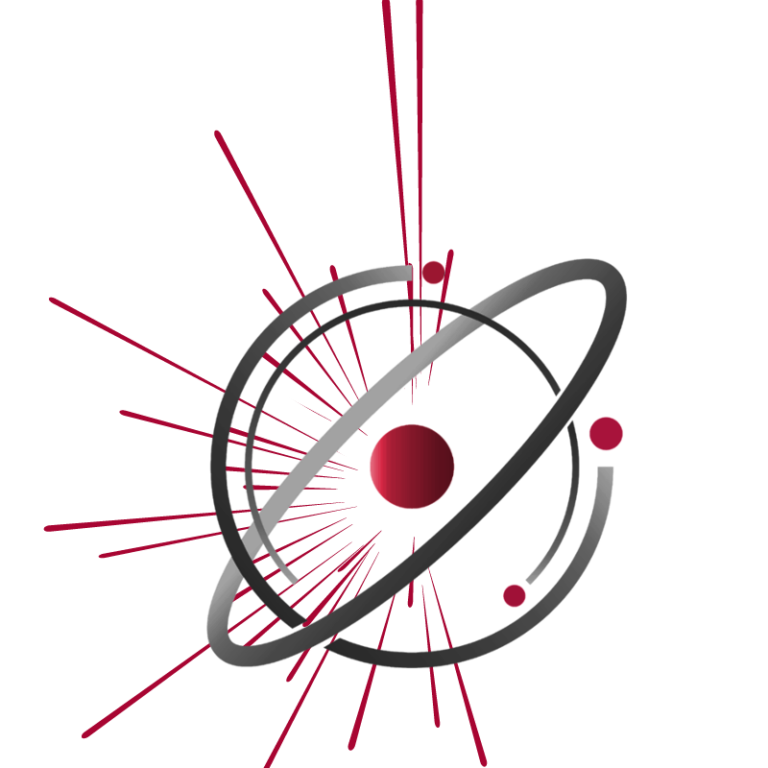
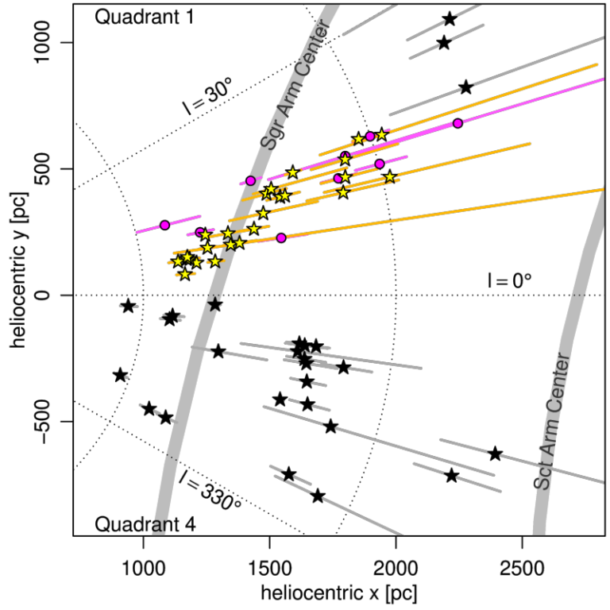
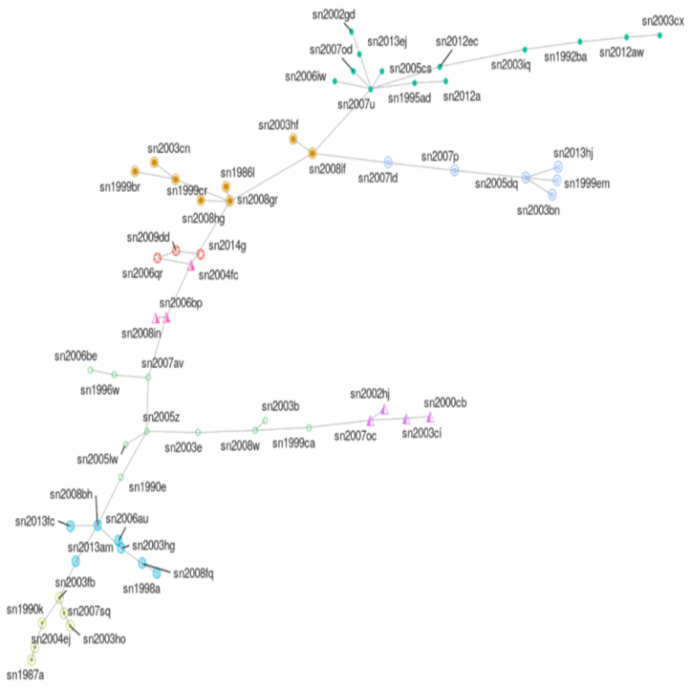
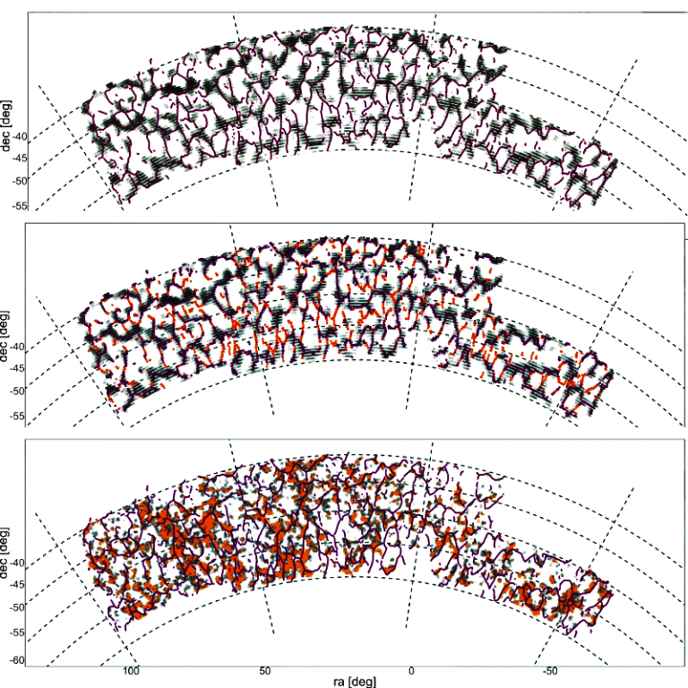

Transients
Time-domain inference
Classification, anomaly detection, follow-up strategy, and physical interpretation for transient streams.
Research
Modern astronomy is full of inverse problems: hidden structure, selection effects, missing data, uncertain classifications, and simulations that are easier to run than to write down analytically. My work develops inference and machine-learning tools for those regimes, then turns them into software that can be used in real survey pipelines.
Research
I work across statistical modelling, machine learning, and astrophysical applications, with an emphasis on methods that remain interpretable under noisy, incomplete, high-dimensional data.

Classification, anomaly detection, follow-up strategy, and physical interpretation for transient streams.

Segmentation and representation methods that combine morphology, colour, and physical context.

Recommendation systems for selecting the most informative observations under limited telescope time.

Using young stellar objects and survey catalogues to infer structure in the Galactic disk.

Graph and low-dimensional representations for spectra, supernovae, and IFU data products.

Statistical summaries for curvilinear structure, mass maps, voids, and large-scale cosmic environments.

Community
I founded and co-chair the Cosmostatistics Initiative, an international network that brings astronomers, statisticians, computer scientists, and software developers into shared projects. COIN has shaped work on LSST, Fink, DES, J-PAS, time-domain science, galaxy morphology, and inference for complex data.